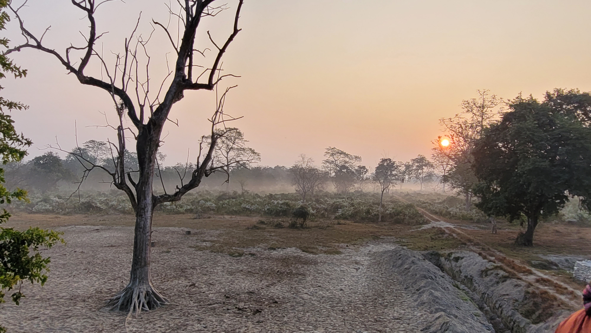

February started with tests and midsems, I could not focus on my work because of the same although somehow I managed to go through the stressful midsem fortnite without much panic this time, although I could have studied a bit more for my electives. Other than this time I was involved in one of my project works and lost a track of time and couldn’t balance time and this time I was struck so deep into one of the projects that when I went home I couldn’t spend time with my family too. Through this, I realized a positive and negative quality of my character. The positive reinforcement was not just self-realization but was through the appreciation of the project mentors. The positive quality was me being stuck to the problem until it is resolved, thus helping me realize my only strength, hard work. The negative being struck to the problem until it is resolved, being cocky and skipping my regular routine, going absolutely off my schedule. And as I speak of this, it can be easily inferred that I still have discipline issues as stated in the previous blog.
One of these days was Holi, it was one of the dullest and most depressing days on my campus as my friends whom I am usually with, were home. I made a resolution to have some routine in my life, I was able to simulate it for slightly over a week. But again when the project I was so involved with getting over on Friday. After all the mental exhaustion, I felt the need to have a day off. I planned to study some books related to my curriculum and others but I just skipped all of that and till this time I am binge-watching suits, completely gone off track, the schedule has been disrupted and I am still not able to bring it on track.
I realized that when I am struck with some task I can give my full dedication to it, I don’t know why but I feel the need for closure and when the work is done, I lose the will to do anything else. I plan to come back on track and somehow I understand that I have to keep some time off everything so that I won’t get exhausted and when I take breaks, I don’t go rogue and regret it later. Well, this sums up the whole guilt trip, I have been having for the past 2 days, I am very ashamed but when I started this it was 2:00 pm and I started binge-watching again, and it’s 6:00 pm now. My biggest problem is I have no control even though I know my ills, when I cross that thin line rather than coming back, I go rogue and make it worse. I have always been able to realize this but never correct it. Now that I see it, I think it’s my biggest ill.
Today is also the day class X boards end and I just realized it has been 6 long years since it ended for me. I would have never thought to make it this far and certainly I feel old. It’s uptime for me to make amends to my living, I am just writing this as a log so that I never forget. There are many things to do I better start soon because soon I will be out of undergraduate too. Let’s see if I can come back after crossing boundaries or still go rogue next time I write these blogs